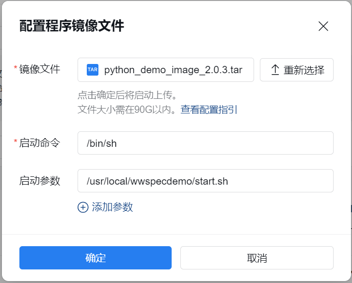
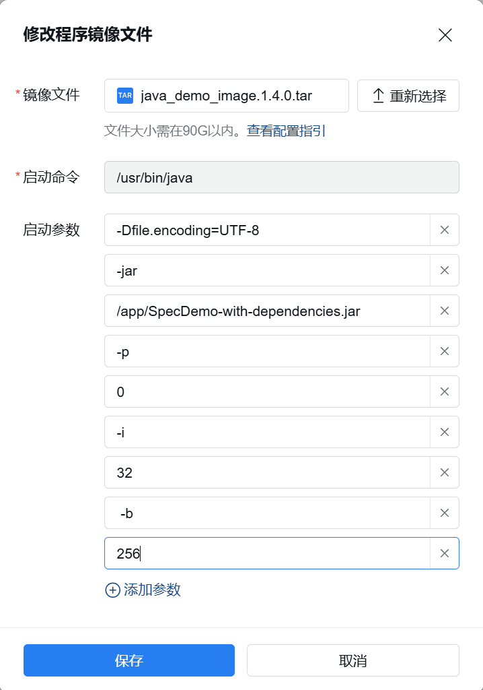
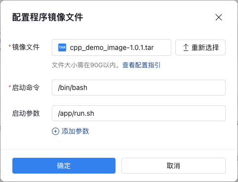
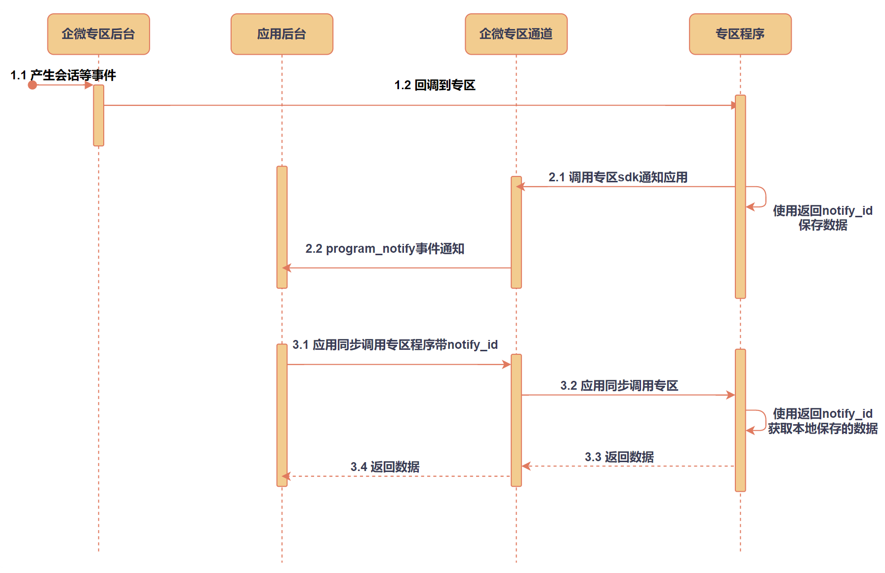

目录
我们提供了一套专区程序的示例代码，开发者可以在示例源码的基础上进行开发，再根据镜像文件配置指引制作镜像。开发者也可以先下载我们制作好的示例镜像，根据镜像文件配置指引在管理端上传配置镜像。示例源码和示例镜像可通过这里下载。
以下是该镜像的启动命令与程序配置说明。
启动命令 /bin/sh 启动参数 /usr/local/wwspecdemo/start.sh点击复制

示例程序支持应用同步发起调用sdk接口以及获取回调到专区的数据。
如果要调用某个sdk接口，需要给程序添加对应sdk接口的能力。
输入协议说明
{ "input": { "func": "指定要处理的逻辑", "func_req": { } } }点击复制
不依赖“能力ID”，而是通过input.func区分demo要处理的逻辑input.func提供的能力以及对应的值，可参考demo源码demoloadsdk.pyinput.func_req为json object，作为input.func处理逻辑对应的协议
下面以两个能力举例说明。
输入协议
{ "input": { "func": "sync_msg", "func_req": { "cursor": "RMTJID", "token": "NGEJKGOEGJKOEGNEOAGOEGOKEGHOEEEEE", "limit": 200 } } }点击复制
func固定为sync_msg，此时func_req为获取会话记录对应的输入协议
输出协议
{ "errcode":0, "errmsg":"ok", "has_more":1, "next_cursor":"JGNLGEHJGIE", "msg_list":[ { "msgid":"xxxmsgid", "sender":{ "type":1, "id":"woxxxxxmmgjiegjie" }, "receiver_list": [ { "type": 1, "id": "woAAAAAAAAAAA" }, { "type": 2, "id": "wmXXXXXXXXXXXXX" } ], "chatid": "wrXXXXXXXXXX", "send_time":166666666, "msgtype":2, "service_encrypt_info":{ "encrypted_secret_key":"KEYAAAAAAABBBBBB", "public_key_ver":1 } } ] }点击复制
输入协议
{ "input": { "func": "do_async_job", "func_req": { } } }点击复制
func固定为do_async_job，此时func_req为空
调用应用同步调用专区程序接口时，外层notify_id传入应用接收专区通知回调的NotifyId字段
输出协议
{ "errcode": 0, "errmsg": "xxx", "event_type": "chat_archive_audit_approved_single", "timestamp": 1408091189, "chat_archive_audit_approved": { "userid": "xxxxxxx", "external_userid": "zzzzz", "chatid":"xxx" }, "conversation_new_message": { "token": "zzzzzzzzzzz" }, "hit_keyword": { "token": "xxx" }, "auth_knowledge_base": { "knowledge_base_id": "xxxxxxx", "knowledge_base_name": "zzzzz" }, "unauth_knowledge_base": { "knowledge_base_id": "xxxxxxx", "knowledge_base_name": "zzzzz" }, "delete_knowledge_base": { "knowledge_base_id": "xxxxxxx", "knowledge_base_name": "zzzzz" }, "chat_archive_export_finished": { "jobid": "xxx" } }点击复制
程序没有出现内部错误时，不会返回errcode和errmsg
将所有需要回调的协议合并
启动命令 /usr/bin/java // 绝对路径 启动参数 1. -Dfile.encoding=UTF-8 // 必须指定JVM默认字符编码为UTF-8 2. -jar 3. /app/SpecDemo-with-dependencies.jar // 绝对路径 4. -p //非必填 5. 0 //-p参数的值。processInIoThread 业务逻辑是否在io线程执行。1:使用io线程执行业务逻辑 0: 使用自定义业务线程执行业务逻辑，默认为1.（建议设置为0，使用业务线程池执行业务逻辑） 6. -i //非必填 7. 32 //-i参数的值。io worker thread count NioEventLoop worker线程池大小 8. -b //非必填 9. 256 //-b参数的值。业务线程池大小 10. -m //非必填 11. 60 //-m参数的值。monitor interval 监控线程打日志时间间隔，默认为60s点击复制

示例程序支持应用同步发起调用sdk接口以及获取回调到专区的数据。
如果要调用某个sdk接口，需要给程序添加对应sdk接口的能力。
如果需要将Java程序示例直接部署到专区进行调试，程序能力的注册请参照如下内容，否则请求和响应可能无法通过专区通道的校验
ability_id: invoke_sync_msg
ability_id格式：invoke_$API_NAME$
注意：Java程序示例对透传请求的处理逻辑为：将传入的能力ID截断“invoke_”前缀后，直接用于调用sdk。开发者如果需要自定义透传请求的能力ID，请额外添加自定义能力ID与sdk接口名的映射，并保证接口名合法
输入协议：
注意：Java程序示例的默认输入协议中，request_data内无需包裹一层input对象
{ "cursor": "", "limit": 0, "token": "" }点击复制
输出协议：
{ "errcode":0, "errmsg":"ok", "has_more":1, "next_cursor":"JGNLGEHJGIE", "msg_list":[ { "msgid":"xxxmsgid", "sender":{ "type":1, "id":"woxxxxxmmgjiegjie" }, "receiver_list": [ { "type": 1, "id": "woAAAAAAAAAAA" }, { "type": 2, "id": "wmXXXXXXXXXXXXX" } ], "chatid": "wrXXXXXXXXXX", "send_time":166666666, "msgtype":2, "service_encrypt_info":{ "encrypted_secret_key":"KEYAAAAAAABBBBBB", "public_key_ver":1 } } ] }点击复制
ability_id：get_callback_data
开发者如果需要自定义获取回调数据的能力ID，直接修改Java程序示例的函数AppActiveCall的对应判断逻辑即可，能力ID不涉及其他逻辑
请求必须捎带notify id，用于在专区程序内唯一标识待查询的数据
Java程序示例处理该能力的逻辑：将存储的回调事件数据原样返回，所有回调事件使用同一个能力，回调事件介绍见：专区程序接收事件通知
这里所有回调事件都要通过该能力返回企业应用，因此输出协议内需要注册所有回调事件中可能出现的字段
输入协议：
{}点击复制
输出协议：
{ "errcode":0, "errmsg":"ok", "event_type": "", "timestamp": 0, "chat_archive_audit_approved": { "userid": "xxxxxxx", "external_userid": "zzzzz", "chatid":"xxx" }, "conversation_new_message": { "token": "zzzzzzzzzzz" }, "hit_keyword": { "token": "xxx" }, "auth_knowledge_base": { "knowledge_base_id": "xxxxxxx", "knowledge_base_name": "zzzzz" }, "chat_archive_export_finished": { "jobid": "xxx" } }点击复制
输出协议字段解析如下：
| 字段 | 含义 |
|---|---|
| errcode | demo内部错误的错误码，默认710660，未出错时没有该字段。企业可根据需要在专区程序内自定义错误码 |
| errmsg | demo内部错误的错误说明，未出错时没有该字段 |
| event_type | 事件类型，各回调事件的共有字段 |
| timestamp | 时间戳，各回调事件的共有字段 |
| chat_archive_audit_approved | 客户同意进行聊天内容存档事件回调 |
| conversation_new_message | 产生会话回调通知 |
| hit_keyword | 命中关键词规则通知 |
| auth_knowledge_base | 知识集管理回调 |
| chat_archive_export_finished | 会话内容导出完成通知 |
| 错误码 | 错误码说明 | 备注 |
|---|---|---|
| 0 | 接口调用成功 | - |
| -10001 | sdk内部错误 | 非网络失败 |
| -10002 | sdk内部网络失败 | 连接失败或者读写超时等失败 |
| -10003 | sdk内部错误 | 非法的http status |
| -10004 | sdk内部错误 | 签名不匹配 |
| -10005 | sdk内部错误 | 解密失败 |
| -10006 | sdk内部错误 | 不支持的api接口名称。请检查使用的sdk版本是不是低版本的 |
| -10008 | sdk内部错误 | 密钥版本不匹配。如果是调试模式，可能是access_token过期导致未正确返回 |
| -10009 | sdk内部错误 | 非法的json数据 |
启动命令 /bin/bash // 绝对路径 启动参数 /app/run.sh点击复制

示例程序支持应用同步发起调用sdk接口以及获取回调到专区的数据。
如果要调用某个sdk接口，需要给程序添加对应sdk接口的能力。
如果需要将c++程序示例直接部署到专区进行调试，程序能力的注册请参照如下内容，否则请求和响应可能无法通过专区通道的校验
ability_id: invoke_sync_msg
ability_id格式：invoke_$API_NAME$
注意：C++程序示例对透传请求的处理逻辑为：将传入的能力ID截断“invoke_”前缀后，直接用于调用sdk。开发者如果需要自定义透传请求的能力ID，请额外添加自定义能力ID与sdk接口名的映射，并保证接口名合法
输入协议：
注意：C++程序示例的默认输入协议中，request_data内无需包裹一层input对象
{ "cursor": "", "limit": 0, "token": "" }点击复制
输出协议：
{ "errcode":0, "errmsg":"ok", "has_more":1, "next_cursor":"JGNLGEHJGIE", "msg_list":[ { "msgid":"xxxmsgid", "sender":{ "type":1, "id":"woxxxxxmmgjiegjie" }, "receiver_list": [ { "type": 1, "id": "woAAAAAAAAAAA" }, { "type": 2, "id": "wmXXXXXXXXXXXXX" } ], "chatid": "wrXXXXXXXXXX", "send_time":166666666, "msgtype":2, "service_encrypt_info":{ "encrypted_secret_key":"KEYAAAAAAABBBBBB", "public_key_ver":1 } } ] }点击复制
ability_id：get_callback_data
请求必须捎带notify id，用于在专区程序内唯一标识待查询的数据
C++程序示例处理该能力的逻辑：将存储的回调事件数据原样返回，所有回调事件使用同一个能力，回调事件介绍见：专区程序接收事件通知
这里所有回调事件都要通过该能力返回企业应用，因此输出协议内需要注册所有回调事件中可能出现的字段
输入协议：
{}点击复制
输出协议：
{ "errcode":0, "errmsg":"ok", "event_type": "", "timestamp": 0, "chat_archive_audit_approved": { "userid": "xxxxxxx", "external_userid": "zzzzz", "chatid":"xxx" }, "conversation_new_message": { "token": "zzzzzzzzzzz" }, "hit_keyword": { "token": "xxx" }, "auth_knowledge_base": { "knowledge_base_id": "xxxxxxx", "knowledge_base_name": "zzzzz" }, "chat_archive_export_finished": { "jobid": "xxx" } }点击复制
输出协议字段解析如下：
| 字段 | 含义 |
|---|---|
| errcode | demo内部错误的错误码，默认710660，未出错时没有该字段。企业可根据需要在专区程序内自定义错误码 |
| errmsg | demo内部错误的错误说明，未出错时没有该字段 |
| event_type | 事件类型，各回调事件的共有字段 |
| timestamp | 时间戳，各回调事件的共有字段 |
| chat_archive_audit_approved | 客户同意进行聊天内容存档事件回调 |
| conversation_new_message | 产生会话回调通知 |
| hit_keyword | 命中关键词规则通知 |
| auth_knowledge_base | 知识集管理回调 |
| chat_archive_export_finished | 会话内容导出完成通知 |
程序审核通过并且部署成功后，可使用授权了数据与智能专区权限的应用使用接口应用同步调用程序。
{ "program_id": "xxx", "ability_id": "xxx", "request_data": "{\"input\":{\"func\":\"sync_msg\",\"func_req\":{\"cursor\":\"RMTJID\",\"token\":\"NGEJKGOEGJKOEGNEOAGOEGOKEGHOEEEEE\",\"limit\":200}}}" }点击复制
{ "program_id": "xxx", "ability_id": "xxx", "notify_id": "xxx", "request_data": "{\"input\":{\"func\":\"do_async_job\",\"func_req\":{\"notify_id\":\"NOTIFYID\"}}}" }点击复制
"program_id": "xxx", "ability_id": "invoke_sync_msg", "request_data": "{\"cursor\":\"xxx\",\"token\":\"xxx\",\"limit\":200}"点击复制
"program_id": "xxx", "ability_id": "get_callback_data", "notify_id": "xxx", "request_data": "{}"点击复制
"program_id": "xxx", "ability_id": "invoke_sync_msg", "request_data": "{\"cursor\":\"xxx\",\"token\":\"xxx\",\"limit\":200}"点击复制
"program_id": "xxx", "ability_id": "get_callback_data", "notify_id": "xxx", "request_data": "{}"点击复制
背景：企业已产生新的会话事件，应用需要获取会话记录，并且请求需要捎带token以避免频率限制
上述流程可参照下图理解：
